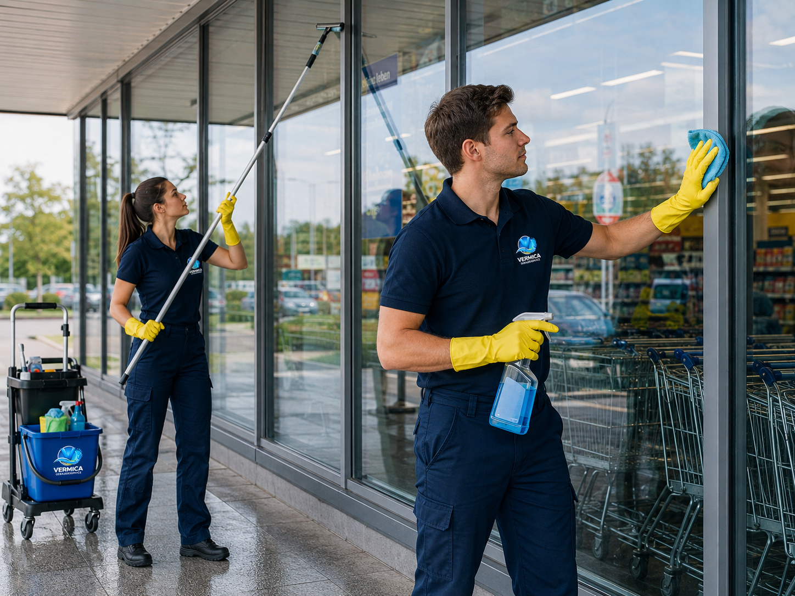

Professionelle Fensterreinigung in Lübeck für klare Sicht, gepflegte Glasflächen und ein sauberes Erscheinungsbild. Wir reinigen Ihre Fenster gründlich, zuverlässig und streifenfrei.
Saubere Fenster sorgen für mehr Licht, eine freundliche Atmosphäre und einen gepflegten ersten Eindruck. Gerade bei Büros, Praxen, Geschäften und Wohngebäuden wirken klare Glasflächen besonders einladend.
VERMICA Gebäudeservice bietet professionelle Fensterreinigung in Lübeck und Umgebung. Wir reinigen Fenster, Rahmen, Fensterbänke und Glasflächen gründlich und zuverlässig.
Ob einmalige Reinigung oder regelmäßige Pflege – wir passen unsere Leistungen flexibel an Ihr Objekt und Ihre Wünsche an. Unser Ziel ist ein sauberes, klares und streifenfreies Ergebnis.

Wir übernehmen alle wichtigen Reinigungsarbeiten rund um Ihre Fenster und Glasflächen.
Innenflächen werden gründlich gereinigt, damit Ihre Räume heller, sauberer und gepflegter wirken.
Außenfenster werden von Staub, Schmutz und sichtbaren Ablagerungen befreit.
Fensterrahmen werden sorgfältig gereinigt und tragen zu einem gepflegten Gesamtbild bei.
Fensterbänke werden von Staub, Schmutz und sichtbaren Verschmutzungen befreit.
Glasflächen in Büros, Praxen, Geschäften und Wohngebäuden werden gründlich gepflegt.
Auf Wunsch übernehmen wir die Fensterreinigung regelmäßig nach vereinbartem Intervall.
Schreiben Sie uns oder rufen Sie uns an. Wir erstellen Ihnen gerne ein individuelles Angebot für Ihre Fensterreinigung in Lübeck.